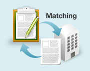

スキルマッチング
自分のスキルに合った求人が簡単に分かる！ 経験職種などの情報を入力するだけで、システムが自動でマッチングを行います。
スキルマッチングとは
＠typeにご登録いただいた「経験職種」などの経歴と、企業の募集要件との間でマッチングを行い、求人をお知らせするサービスです。
- こんなにスゴい！
スキルマッチの特徴/メリット -
-
経験・スキルにマッチした企業が見つかります

あなたの登録情報と企業の募集要件をシステムが自動でマッチング。マッチした求人が一覧で分かります。
-
求人とのマッチング度も算出される
ご登録いただいた内容から「スキルマッチング度」を算出。どれだけ自分にマッチしているかも簡単に分かります。
-
マッチングするたびにメールでお知らせ
新着求人ともすぐにマッチング！マッチした求人があるとメールでお知らせするので、見逃す心配がありません。
-
こちらからスキルマッチングが利用できます